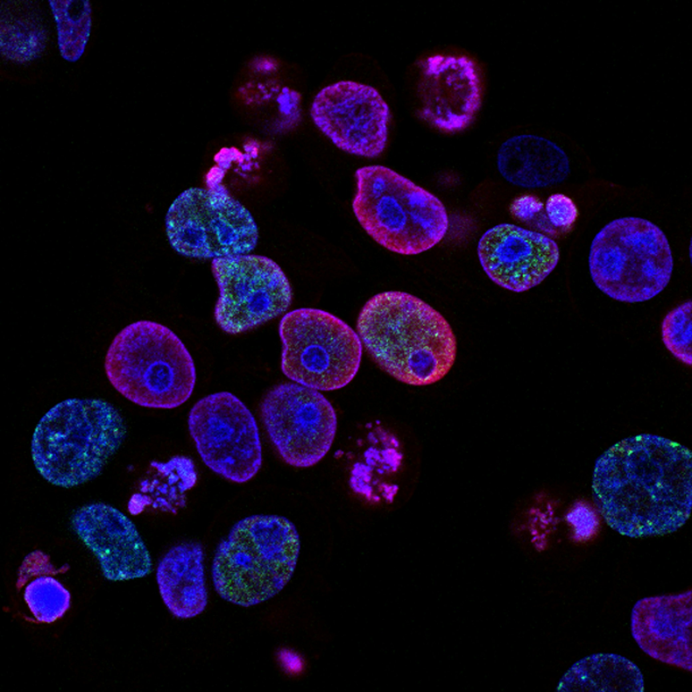

Harness the power of machine learning to identify targets, screen hits, and optimize leads in weeks, not years.
Accelerate your timeline from target identification to clinical candidate selection.
Minimize late-stage failures and optimize resource allocation with predictive modeling.
Our platform evolves with every experiment, becoming smarter and more precise.
We believe in a "clean and decent" approach to drug discovery. Our platform provides transparent, audit-ready data at every step, ensuring you have total confidence in your candidates.
Precision targeting using multi-dimensional omics data. We integrate diverse datasets to construct knowledge graphs that reveal non-obvious gene-disease associations.
Identifying interaction interfaces and druggable cavities. Using advanced ML models like P2Rank and geometric solvers, we pinpoint the precise regions where disruption of protein-to-protein interactions is most likely.
Evaluating binding affinity at scale. Our deep learning architecture predicts pIC50 values for billions of compounds, effectively filtering libraries before synthesis.
Refining candidates for clinical success. Generative models iteratively modify molecular structures to improve solubility, metabolic stability, and safety profiles.
Closing the loop between prediction and biology. Platform-integrated ELN allows for direct data capture from assays, refining the AI models with ground-truth wet-lab data.

Mitigating bias in pre-clinical research. Automated allocation and blinding protocols ensure that analysis remains objective and statistically rigorous.
Built on HIPAA-compliant architecture with end-to-end encryption for all proprietary molecular data and patient information.
Elastic GPU clusters automatically scale to handle massive virtual screens and molecular dynamics simulations without latency.
Real-time project sharing allows biologists and chemists to annotate targets and review hit lists simultaneously.
Seamlessly integrate with existing LIMS and CRO workflows via our comprehensive, well-documented RESTful API.